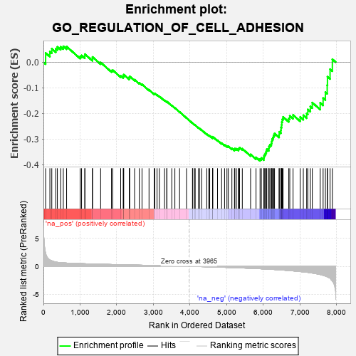
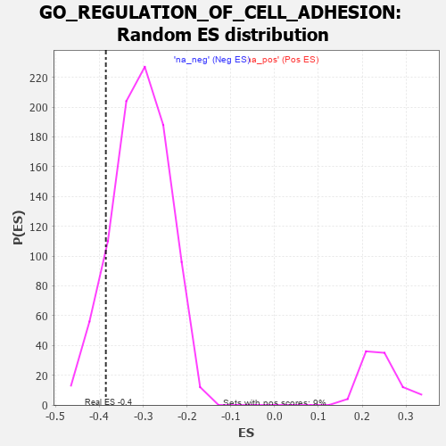

| | | Dataset | 7d |
| Phenotype | NoPhenotypeAvailable |
| Upregulated in class | na_neg |
| GeneSet | GO_REGULATION_OF_CELL_ADHESION |
| Enrichment Score (ES) | -0.38530377 |
| Normalized Enrichment Score (NES) | -1.2535697 |
| Nominal p-value | 0.11258278 |
| FDR q-value | 0.5383625 |
| FWER p-Value | 1.0 |
Table: GSEA Results Summary

Fig 1: Enrichment plot: GO_REGULATION_OF_CELL_ADHESION
Profile of the Running ES Score & Positions of GeneSet Members on the Rank Ordered List
| PROBE | GENE SYMBOL | GENE_TITLE | RANK IN GENE LIST | RANK METRIC SCORE | RUNNING ES | CORE ENRICHMENT | | 1 | RAC2 | | | 60 | 2.442 | 0.0358 | No |
| 2 | FOXF1 | | | 176 | 1.136 | 0.0414 | No |
| 3 | RHOH | | | 228 | 0.987 | 0.0525 | No |
| 4 | DLL1 | | | 337 | 0.760 | 0.0523 | No |
| 5 | SOX13 | | | 380 | 0.717 | 0.0597 | No |
| 6 | LRP1 | | | 470 | 0.648 | 0.0599 | No |
| 7 | SRF | | | 542 | 0.615 | 0.0618 | No |
| 8 | GLMN | | | 632 | 0.583 | 0.0609 | No |
| 9 | MEN1 | | | 1003 | 0.483 | 0.0225 | No |
| 10 | AKT1 | | | 1040 | 0.476 | 0.0263 | No |
| 11 | SRC | | | 1128 | 0.459 | 0.0234 | No |
| 12 | NCK2 | | | 1131 | 0.458 | 0.0313 | No |
| 13 | NKAP | | | 1337 | 0.422 | 0.0128 | No |
| 14 | TBCD | | | 1338 | 0.422 | 0.0203 | No |
| 15 | SOCS6 | | | 1560 | 0.381 | -0.0010 | No |
| 16 | NFAT5 | | | 1856 | 0.326 | -0.0328 | No |
| 17 | PAK3 | | | 1889 | 0.322 | -0.0311 | No |
| 18 | BMP7 | | | 2107 | 0.290 | -0.0535 | No |
| 19 | DDR1 | | | 2176 | 0.280 | -0.0572 | No |
| 20 | SYK | | | 2186 | 0.278 | -0.0534 | No |
| 21 | C1QBP | | | 2189 | 0.278 | -0.0487 | No |
| 22 | FAF1 | | | 2340 | 0.255 | -0.0633 | No |
| 23 | DOCK8 | | | 2341 | 0.254 | -0.0587 | No |
| 24 | BCAS3 | | | 2352 | 0.253 | -0.0555 | No |
| 25 | ZC3H8 | | | 2486 | 0.229 | -0.0683 | No |
| 26 | VAV3 | | | 2614 | 0.210 | -0.0807 | No |
| 27 | DSCAM | | | 2689 | 0.200 | -0.0866 | No |
| 28 | DAPK3 | | | 2880 | 0.169 | -0.1077 | No |
| 29 | WNT4 | | | 3023 | 0.146 | -0.1232 | No |
| 30 | LEF1 | | | 3037 | 0.144 | -0.1223 | No |
| 31 | RREB1 | | | 3099 | 0.137 | -0.1276 | No |
| 32 | GCNT2 | | | 3162 | 0.128 | -0.1332 | No |
| 33 | SMAD3 | | | 3303 | 0.105 | -0.1491 | No |
| 34 | FMN1 | | | 3363 | 0.095 | -0.1550 | No |
| 35 | SMAD7 | | | 3369 | 0.093 | -0.1539 | No |
| 36 | FES | | | 3501 | 0.077 | -0.1692 | No |
| 37 | RSU1 | | | 3585 | 0.062 | -0.1787 | No |
| 38 | NF1 | | | 3713 | 0.040 | -0.1941 | No |
| 39 | JAG2 | | | 3903 | 0.010 | -0.2179 | No |
| 40 | SFRP2 | | | 4065 | -0.018 | -0.2381 | No |
| 41 | CSF1 | | | 4074 | -0.019 | -0.2388 | No |
| 42 | ABL1 | | | 4125 | -0.027 | -0.2447 | No |
| 43 | CRK | | | 4139 | -0.031 | -0.2458 | No |
| 44 | ARPC2 | | | 4232 | -0.047 | -0.2566 | No |
| 45 | ARL2 | | | 4254 | -0.050 | -0.2584 | No |
| 46 | BAG4 | | | 4314 | -0.061 | -0.2648 | No |
| 47 | FRMD5 | | | 4455 | -0.085 | -0.2811 | No |
| 48 | ILK | | | 4510 | -0.096 | -0.2862 | No |
| 49 | RIN2 | | | 4535 | -0.101 | -0.2875 | No |
| 50 | ADTRP | | | 4612 | -0.120 | -0.2950 | No |
| 51 | GATA3 | | | 4614 | -0.120 | -0.2930 | No |
| 52 | DLG5 | | | 4619 | -0.121 | -0.2913 | No |
| 53 | FBLN1 | | | 4748 | -0.149 | -0.3050 | No |
| 54 | DLG1 | | | 4860 | -0.169 | -0.3161 | No |
| 55 | FZD4 | | | 4940 | -0.186 | -0.3228 | No |
| 56 | KLF4 | | | 5005 | -0.198 | -0.3274 | No |
| 57 | PDPK1 | | | 5043 | -0.207 | -0.3284 | No |
| 58 | FLCN | | | 5140 | -0.235 | -0.3365 | No |
| 59 | ATM | | | 5210 | -0.249 | -0.3408 | No |
| 60 | GPR4 | | | 5219 | -0.250 | -0.3374 | No |
| 61 | PTEN | | | 5262 | -0.261 | -0.3381 | No |
| 62 | CD9 | | | 5319 | -0.277 | -0.3403 | No |
| 63 | NPY2R | | | 5331 | -0.281 | -0.3367 | No |
| 64 | EPHA1 | | | 5349 | -0.285 | -0.3337 | No |
| 65 | MDGA1 | | | 5424 | -0.301 | -0.3378 | No |
| 66 | WNK1 | | | 5650 | -0.362 | -0.3600 | No |
| 67 | ADA | | | 5798 | -0.405 | -0.3714 | No |
| 68 | DOCK1 | | | 5908 | -0.438 | -0.3775 | Yes |
| 69 | LDB1 | | | 5944 | -0.451 | -0.3739 | Yes |
| 70 | XBP1 | | | 6011 | -0.475 | -0.3739 | Yes |
| 71 | PRKX | | | 6016 | -0.477 | -0.3659 | Yes |
| 72 | RAC1 | | | 6036 | -0.484 | -0.3597 | Yes |
| 73 | JAG1 | | | 6060 | -0.494 | -0.3538 | Yes |
| 74 | CALR | | | 6077 | -0.499 | -0.3470 | Yes |
| 75 | FLOT2 | | | 6092 | -0.504 | -0.3398 | Yes |
| 76 | STK4 | | | 6145 | -0.518 | -0.3372 | Yes |
| 77 | ROCK1 | | | 6152 | -0.520 | -0.3287 | Yes |
| 78 | RAG1 | | | 6176 | -0.530 | -0.3222 | Yes |
| 79 | VIT | | | 6215 | -0.541 | -0.3174 | Yes |
| 80 | TPM1 | | | 6226 | -0.545 | -0.3090 | Yes |
| 81 | CDC42 | | | 6236 | -0.548 | -0.3003 | Yes |
| 82 | AP3D1 | | | 6261 | -0.558 | -0.2935 | Yes |
| 83 | FLOT1 | | | 6276 | -0.564 | -0.2852 | Yes |
| 84 | LMO7 | | | 6303 | -0.578 | -0.2782 | Yes |
| 85 | CSK | | | 6428 | -0.630 | -0.2828 | Yes |
| 86 | MALT1 | | | 6432 | -0.634 | -0.2719 | Yes |
| 87 | SOX2 | | | 6477 | -0.652 | -0.2659 | Yes |
| 88 | DYSF | | | 6481 | -0.654 | -0.2546 | Yes |
| 89 | LAMA1 | | | 6496 | -0.659 | -0.2447 | Yes |
| 90 | DPP4 | | | 6501 | -0.663 | -0.2334 | Yes |
| 91 | TRPV4 | | | 6515 | -0.668 | -0.2232 | Yes |
| 92 | KANK1 | | | 6536 | -0.678 | -0.2136 | Yes |
| 93 | PAK1 | | | 6691 | -0.757 | -0.2197 | Yes |
| 94 | GSK3B | | | 6719 | -0.768 | -0.2095 | Yes |
| 95 | ADAM9 | | | 6808 | -0.819 | -0.2061 | Yes |
| 96 | CCR2 | | | 7003 | -0.939 | -0.2141 | Yes |
| 97 | NID1 | | | 7088 | -0.987 | -0.2072 | Yes |
| 98 | PTPRJ | | | 7180 | -1.054 | -0.2000 | Yes |
| 99 | IFT74 | | | 7211 | -1.085 | -0.1845 | Yes |
| 100 | CIB1 | | | 7280 | -1.152 | -0.1727 | Yes |
| 101 | CYLD | | | 7333 | -1.206 | -0.1578 | Yes |
| 102 | LAMA2 | | | 7549 | -1.468 | -0.1590 | Yes |
| 103 | PKD1 | | | 7628 | -1.611 | -0.1403 | Yes |
| 104 | ANK3 | | | 7690 | -1.740 | -0.1171 | Yes |
| 105 | PLPP3 | | | 7740 | -1.876 | -0.0899 | Yes |
| 106 | CASP3 | | | 7747 | -1.902 | -0.0568 | Yes |
| 107 | TRAF6 | | | 7818 | -2.157 | -0.0273 | Yes |
| 108 | FYN | | | 7881 | -2.622 | 0.0114 | Yes |
Table: GSEA details [plain text format]

Fig 2: GO_REGULATION_OF_CELL_ADHESION: Random ES distribution
Gene set null distribution of ES for GO_REGULATION_OF_CELL_ADHESION